MSK Oncology: Soft Tissue Tumours
- Benign soft tissue tumours are common; sarcomas are rare (about 100 benign : 1 malignant). A sarcoma is by definition a malignant tumour of mesenchymal (connective) tissue.
- The rule to avoid the “whoops”: a lump < 5 cm with no suspicious features can be excised. > 5 cm, or suspicious (rapid growth, pain, recurrence, deep, fixed, difficult location): image first (MRI) or send to a surgical expert, then biopsy. Don't shell it out.
- Sarcomas are usually painless and rarely spread to lymph nodes. They spread to the lungs (about 25% at presentation), so stage with a CT chest.
- Image before biopsy. The best biopsy is a core biopsy by someone experienced in sarcoma. FNA gives too few cells; an excisional biopsy is the “whoops”.
- Treatment: a multidisciplinary tumour board, then wide excision (1–2 cm margin) ± radiotherapy, usually pre-op in Canada. Radiation cuts local recurrence from 30% to 10%. Adjuvant chemo isn't standard for soft tissue sarcoma.
- Names: lipoma/liposarcoma, rhabdomyoma/rhabdomyosarcoma, leiomyoma/leiomyosarcoma, fibroma/fibrosarcoma, neurofibroma/MPNST. MDM2 positive = liposarcoma; MDM2 negative and CD34 positive = a lipoma variant.
Learning Objectives
- Develop an approach to a patient with a soft tissue mass.
- Distinguish between tissue types and the characteristics of benign and malignant soft tissue tumours.
- Identify clinical presentations concerning for MSK malignancy.
- Develop a management plan for a patient with a soft tissue mass.
Three recordings (70 min) from the London sarcoma team: epidemiology and pathology (Dr. B. Wehrli, pathology), then clinical diagnosis and management, and four cases (Dr. D. Logan, medical oncology). The deck also credits Drs. S. Latosinsky (surgical oncology) and D. D'Souza (radiation oncology). Bone sarcomas are “a whole different lecture”; this one is about soft tissue.
Epidemiology and Pathology
What soft tissue is, who gets sarcomas, how they're named, and how the pathologist makes the diagnosis.
What Counts as Soft Tissue
Formally: non-epithelial, extraskeletal tissue, excluding the reticuloendothelial system, glia and the supporting tissue of organs. In plain terms, tumours that arise from or resemble connective tissue: skeletal muscle, smooth muscle, fat, fibrous tissue, blood vessels and lymphatics, and peripheral nerve. All come from mesoderm, so these are mesenchymal tumours.
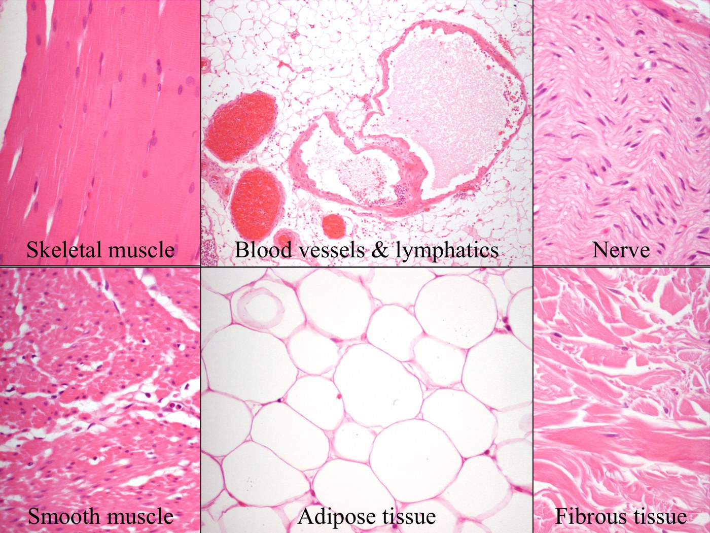
| Epidemiology | |
|---|---|
| Benign : malignant | About 100 : 1 (benign about 300 per 100,000; malignant about 2 per 100,000). Many benign lumps never come to attention. |
| Sarcoma | A malignant soft tissue tumour (“malignant sarcoma” is redundant). Two big groups: bone and soft tissue. |
| Age | Rises with age; most are in adults. Childhood ones: rhabdomyosarcoma, Ewing sarcoma, osteosarcoma (and the deck lists neuroblastoma). |
| Where | Anywhere there's connective tissue, most often the lower limb, especially the thigh, then the retroperitoneum and abdomen |
| How rare | Canada (2013): about 1,255 soft tissue and 405 bone sarcomas, against about 27,000 each of lung, colorectal and breast cancer. So they're referred to tertiary sarcoma centres. |
Causes
About 99% have no known cause. Trauma doesn't cause sarcomas; it just draws attention to a lump that was already there (the exception is myositis ossificans, a benign reactive lesion after trauma).
| Category | Exposure or condition | Tumour |
|---|---|---|
| Environmental | Asbestos | Mesothelioma |
| Vinyl chloride | Angiosarcoma | |
| Herbicides (dioxin), prior radiation therapy, foreign material | Undifferentiated sarcoma (post-radiation sarcoma: uncommon, but you'll see it) | |
| Virus | HHV-8 | Kaposi sarcoma (all forms; the lab can test for it) |
| Immune / lymphatic | Chronic lymphedema, e.g. after axillary dissection for breast cancer (Stewart–Treves) | Angiosarcoma |
| Genetic | Li–Fraumeni | p53 mutation |
| Hereditary retinoblastoma | RB mutation | |
| Neurofibromatosis type 1 (autosomal dominant) | NF1 (neurofibromin) mutation; malignant peripheral nerve sheath tumour |
Classification and Names
Soft tissue tumours are classified by the adult tissue they most resemble (their phenotype): fibrous, fatty, smooth muscle, skeletal muscle, nerve, vascular, or unknown (many tumours have no normal counterpart).
| Behaviour category | What it means |
|---|---|
| Benign | Limited growth; may recur if not fully removed; no metastasis |
| Intermediate, locally aggressive | Invades neighbouring structures but doesn't metastasize; can still kill (e.g. intra-abdominal fibromatosis compressing vessels, kidneys or bowel) |
| Intermediate, rarely metastasizing | Looks benign, yet 5–10% metastasize unpredictably |
| Malignant (sarcoma) | Locally aggressive and frequently metastasizes, mainly to the lungs. About 25% already have metastases at diagnosis. |
| Adult tissue | Benign | Malignant |
|---|---|---|
| Fat | Lipoma | Liposarcoma |
| Skeletal muscle | Rhabdomyoma | Rhabdomyosarcoma |
| Smooth muscle | Leiomyoma | Leiomyosarcoma |
| Fibrous tissue | Fibroma | Fibrosarcoma |
| Peripheral nerve | Neurofibroma | Neurofibrosarcoma, usually called malignant peripheral nerve sheath tumour (MPNST) |
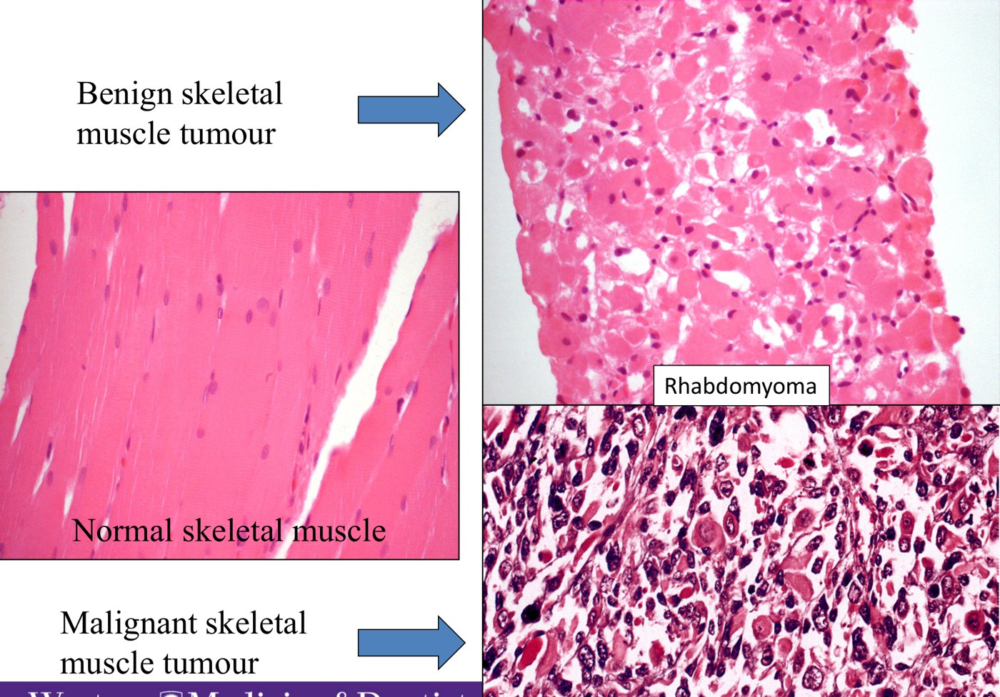
How the Diagnosis Is Made
Clinical findings and imaging usually can't tell benign from malignant, so you need tissue, usually a core biopsy (a hollow cutting needle, guided by ultrasound or CT if deep). It's only a partial sample, hoped to represent the whole tumour.
Builds the differential and decides which extra tests to run. Sometimes it's diagnostic on its own, e.g. myxoid liposarcoma: uniform oval cells, a myxoid stroma, branching capillaries and lipoblasts (vacuoles scalloping the nucleus).
Special stains (reticulin, PAS-D) that show patterns or inclusions
Antibodies that turn a target protein brown (e.g. MDM2, CD34, TFE3)
FISH and sequencing for characteristic translocations and mutations; increasingly used
Rarely used now
Because several tests are often needed, a sarcoma diagnosis can take days to weeks. A malignant result goes to the multidisciplinary meeting.
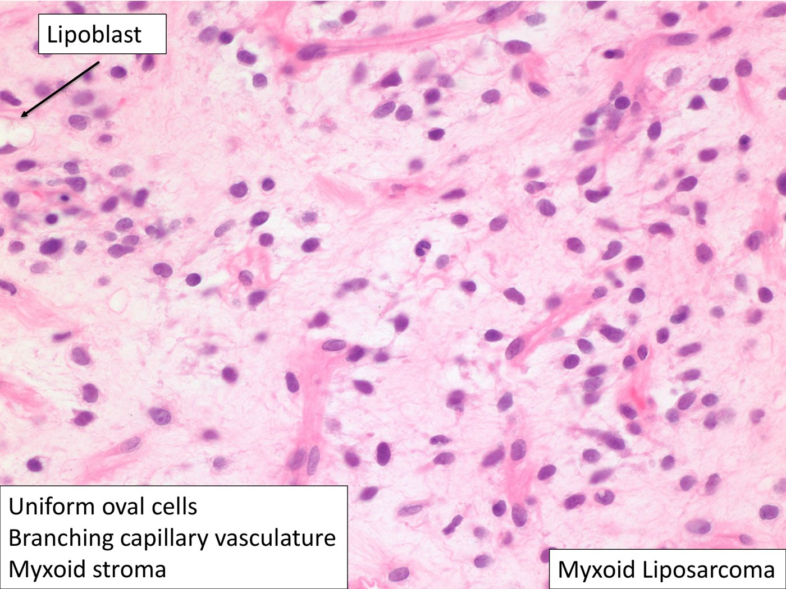
The Lump: Diagnosis and Management
History, exam, the suspicious-mass guideline, biopsy and treatment.
History and Exam
Two presentations: “Doctor, I have this lump”, and the one to avoid, “Whoops, it's a sarcoma!”: a lump assumed benign is excised with little or no margin, and the pathology comes back as sarcoma.
| History | Why |
|---|---|
| When first noticed, how big then, how big now | Be persistent. Anchor to life events (“last Christmas?”) and use fruit and nuts for size (blueberry, kiwi, grapefruit). Confirm: “so it's about twice the size?” |
| Trauma | Often noticed after an injury; ask anyway |
| Symptoms | Sarcomas are usually painless. Significant pain or numbness makes you think of a metastasis from a commoner cancer. Document before you do anything. |
| Recurrence | Removed before? What was it called? |
| Other lumps | Multiple lipomas are common |
| Family history | Lipomas and sarcomas can run in families |
| Exam | What to note |
|---|---|
| Look | Location, size, skin changes (redness, warmth, dilated veins, ulceration) |
| Feel | Consistency (soft like fat, rubbery, rock hard); superficial (subcutaneous) or deep (in muscle: have the patient tense the muscle underneath); mobile, tethered or fixed |
| Regional nodes | Uncommonly involved; nodes argue against a sarcoma |
The Suspicious-Mass Guideline
From the Cancer Care Ontario sarcoma diagnostic pathway. This is the key piece to remember, and all four cases run through it.
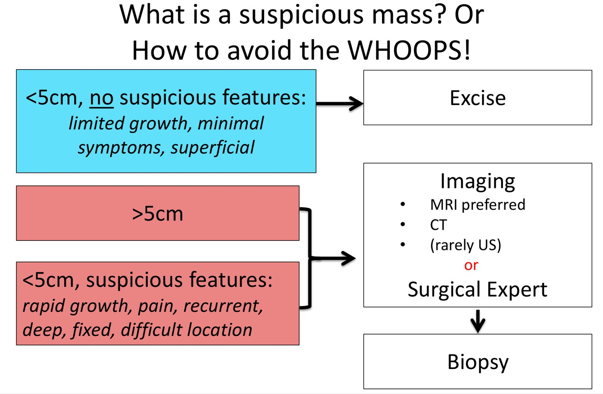
| Mass | Do |
|---|---|
| < 5 cm, no suspicious features (limited growth, minimal symptoms, superficial) | Excise |
| > 5 cm (even if it looks like a lipoma) | Imaging (MRI preferred, or CT, rarely US) or a surgical expert, then biopsy. Do not excise. |
| < 5 cm with suspicious features: rapid growth, pain, recurrence, deep, fixed, difficult location |
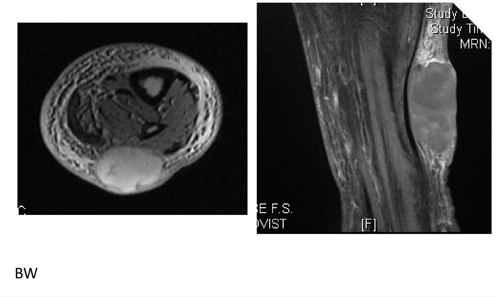
Biopsy
Image before you biopsy, and have the biopsy done by someone experienced in sarcoma. A badly placed biopsy disrupts the tumour, enlarges the resection and can cost the patient cure or the limb.
| Method | Pros | Cons |
|---|---|---|
| Fine needle aspiration | Cheap, easy, fast, atraumatic, in the office | Discouraged if sarcoma is possible: few cells, can't type the tumour or see its architecture, little left for extra tests |
| Excisional | Removes the whole lesion | Minimal surrounding tissue: not ideal if sarcoma (this is the “whoops”) |
| Incisional | More tissue; shows how the cells are organized | More invasive |
| Core | The best compromise: less invasive, adequate tissue, good diagnosis, doesn't disturb the lesion. Often CT-guided by radiology. | A partial sample |
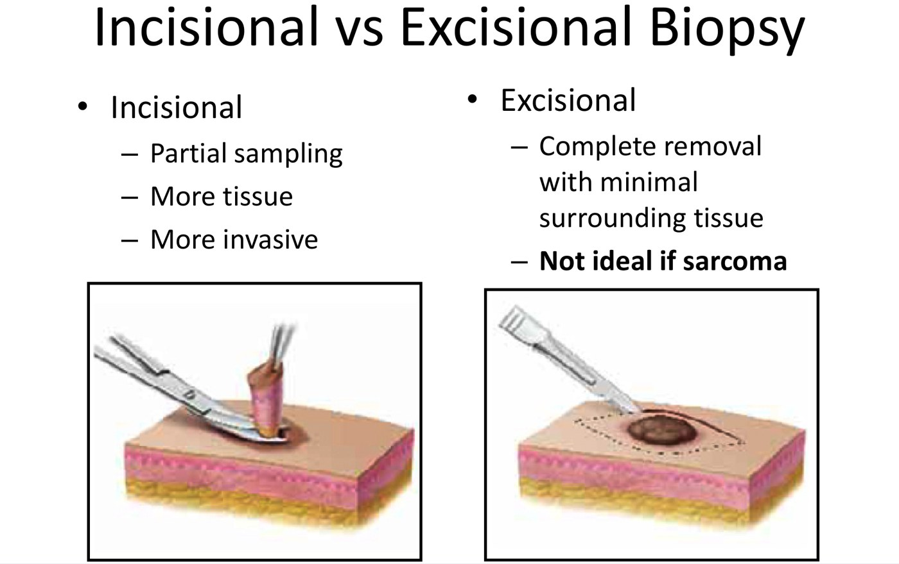
Staging and Treatment
- Staging sets the goals of care. Sarcomas spread to the lung, so stage with a CT chest (a chest x-ray at the first visit too).
- Every possible sarcoma goes to a multidisciplinary team (surgery, radiation and medical oncology, pathology, radiology) at a tumour board, before any surgery.
- Cure with surgery and radiation: e.g. leiomyosarcoma, liposarcoma. Cure with chemotherapy plus radiation and/or surgery: osteosarcoma, Ewing sarcoma, rhabdomyosarcoma (chemo before surgery), especially in young adults.
- Adjuvant (post-op) chemotherapy is not standard for soft tissue sarcoma: no clear survival benefit, because current drugs work poorly. It's used for select subtypes or in trials.
- Not curable: palliative measures can greatly improve quality of life.
- Prognosis can be estimated with the Memorial Sloan Kettering nomogram (histology, grade, depth, site, size).
| Resection | What it is |
|---|---|
| Marginal | Through the tumour's pseudocapsule: the “whoops” operation |
| Wide (preferred) | A cuff of normal tissue around the tumour, ideally 1–2 cm (rarely achieved; anatomy often leaves a close or positive margin) |
| Radical | The whole compartment removed |
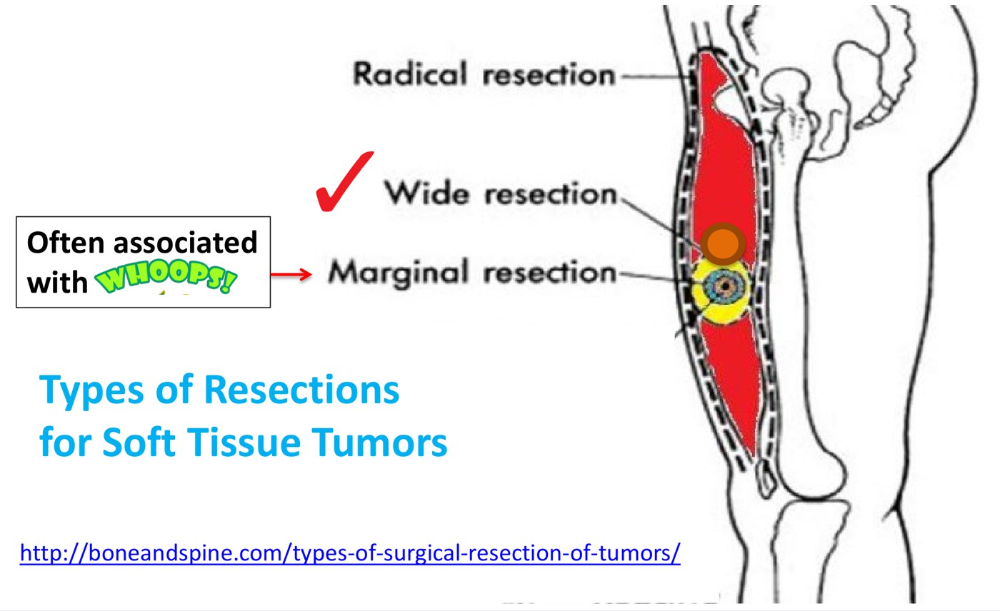
Radical, wide, marginal. boneandspine.com, via the deck.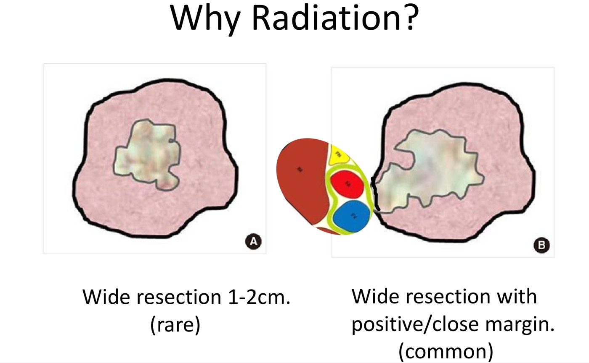
Ideal vs usual margins, which is why radiation is added. From the deck.Adding radiation to surgery cuts local recurrence from about 30% to 10%, mostly by treating the close margins anatomy forces on the surgeon. Pre-op (the norm in Canada and Europe; post-op is commoner in the US) uses a lower dose, targets only the tumour, and the surgeon then removes most of the irradiated tissue, so long-term function is better. Post-op radiation has to treat a larger, scarred bed.
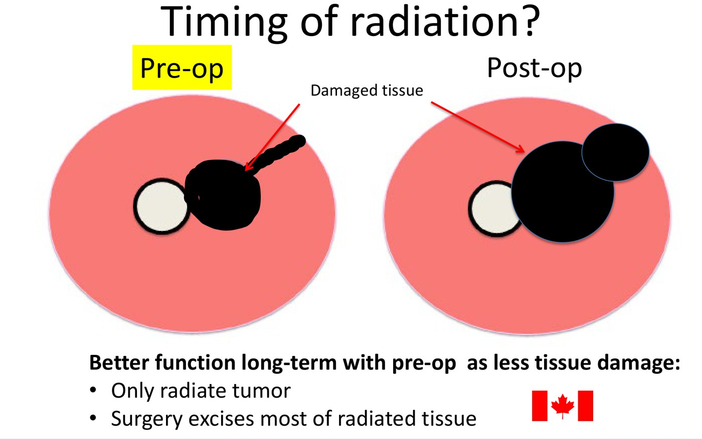
The Four Cases
Each runs through the guideline. Patient and operative photographs are left out.
Cases
Case 1: 33-year-old man, back/flank mass
History: noticed 6 years ago, “big”, not quite doubled, uncomfortable; multiple other lumps; an uncle with lumps. Exam: big, subcutaneous, easily mobile, normal skin; other obvious lipomas.
Guideline: no suspicious features, but > 5 cm, so image or refer, don't just excise. Ultrasound: 17 × 16 × 5 cm, subcutaneous, homogeneous, not involving the deep fascia; “probable lipoma, can't rule out sarcoma”. A sarcoma surgeon removed it.
Pathology: fat with spindle and multinucleated cells. The differential is a benign spindle cell/pleomorphic lipoma (observe) vs well-differentiated liposarcoma (atypical lipomatous tumour). MDM2 negative, CD34 positive → lipoma.
Case 2: 18-year-old man, right hip mass
History: noticed about 18 months ago, no change, no trauma, no symptoms, no other lumps, no family history. Exam: plum-sized, subcutaneous, tethered, nodes clear.
Guideline: < 5 cm but suspicious (tethered), so image first. CT: in the subcutaneous fat, not attached to muscle, odd shape. Biopsy and tumour board; he's young, so they try to avoid radiation: wide excision, with post-op radiation only if margins were positive. Chest x-ray clear.
Pathology: an unusual spindle cell sarcoma; margins adequate (closest peripheral 4 mm; the surgeon's orienting sutures let the pathologist check each margin). Follow-up every 6 months with an annual chest x-ray; no recurrence at 5 years, discharged.
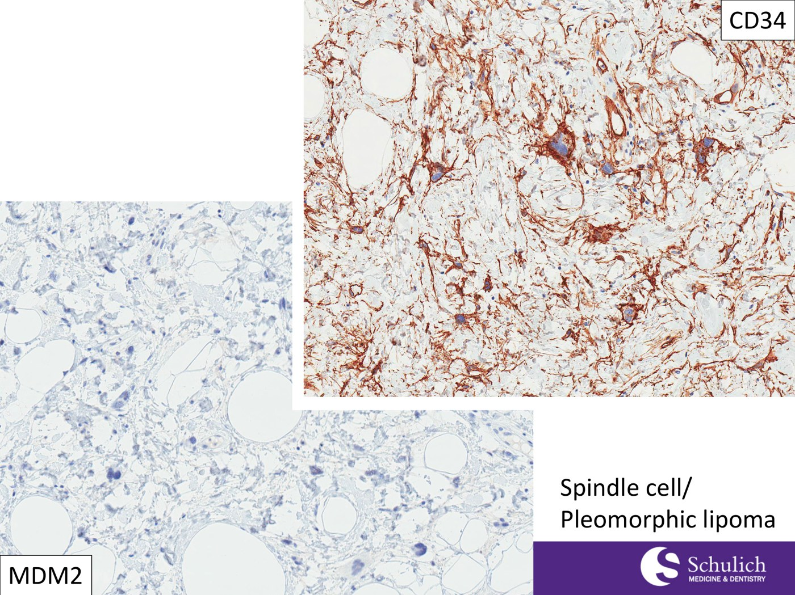
Case 1: MDM2 negative, CD34 positive = lipoma. From the deck.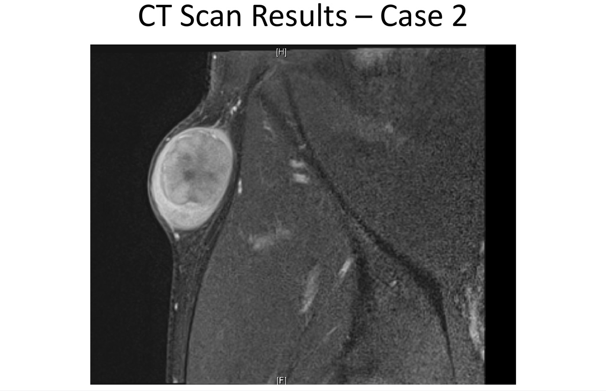
Case 2: subcutaneous, separate from muscle. From the deck.Case 3: 55-year-old man with neurofibromatosis, left thigh mass
History: noticed a year ago, now football-sized (more than doubled), a dull ache for 2–3 months, still working; NF1. Exam: cantaloupe-sized, in the quadriceps, tethered, no inguinal nodes.
Guideline: > 5 cm plus suspicious features (rapid growth, pain, deep, fixed). MRI: in one muscle group, compartmentalized. Core biopsy: malignant peripheral nerve sheath tumour arising in NF1.
Management: CT chest (clear), tumour board, pre-op radiation for 6 weeks, surgery 6–8 weeks later; no adjuvant chemo (poor prognosis, chemo-resistant). Back to work, CT chest every 6 months. At 1 year: multiple lung metastases, unresectable, incurable (with only a few, a metastasectomy might be offered). Medical oncology (no standard chemo, goals of care, molecular profiling for a targeted-therapy trial) and, most importantly, palliative care.
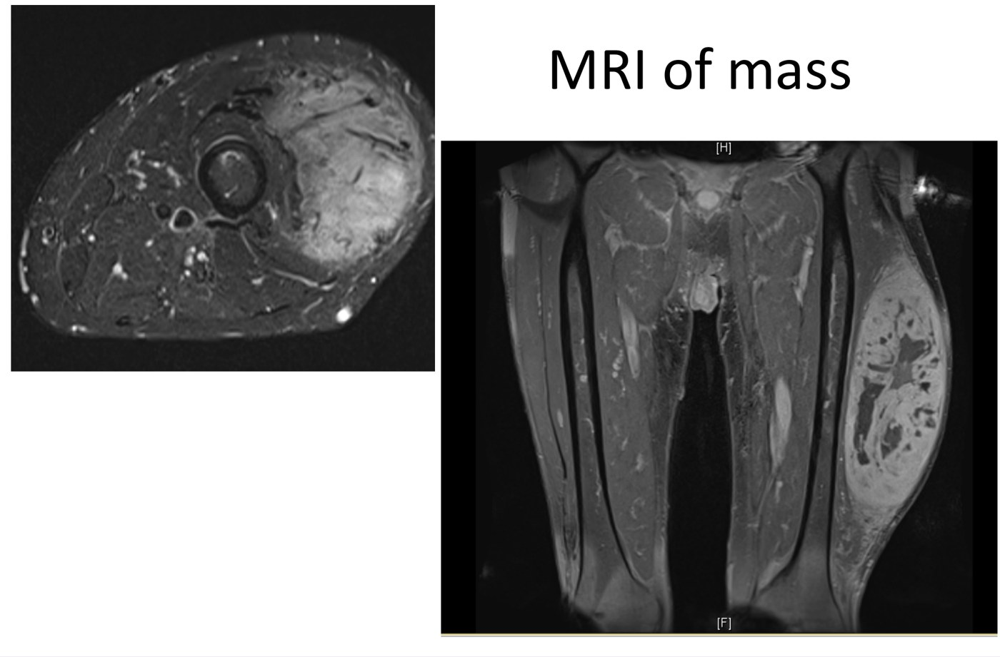
Case 3: an intramuscular thigh mass. From the deck.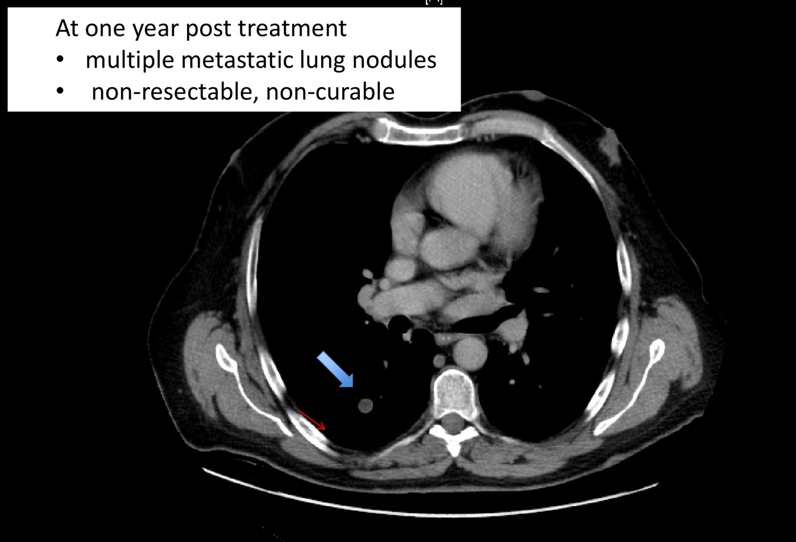
Case 3 at one year: lung metastases. From the deck.Case 4: 55-year-old man, abdominal mass
History: ED visit for paresthesias; rising abdominal girth, poor appetite, early satiety, 20 lb weight loss, fatigue, normal bowels. CT: a huge, homogeneous mass displacing the abdominal organs.
Management: the picture is so classic that the board agreed no biopsy was needed: liposarcoma (5-year sarcoma-specific survival about 40%). CT chest clear, so pre-op radiation for 6 weeks, surgery 6–8 weeks later.
Pathology: MDM2 positive; dedifferentiated liposarcoma. A well-differentiated liposarcoma recurs locally but doesn't metastasize; it can progress to dedifferentiated liposarcoma, which can metastasize. No disease at 1.5 years but fatigued and not working; discharged, managed symptomatically.
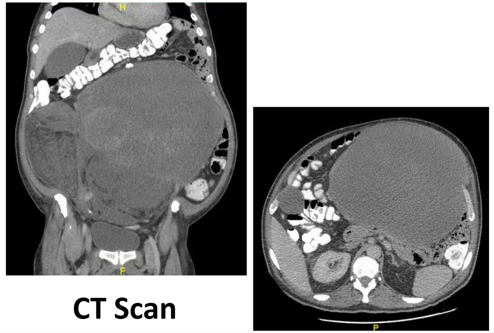
Case 4: a giant retroperitoneal/abdominal liposarcoma. From the deck.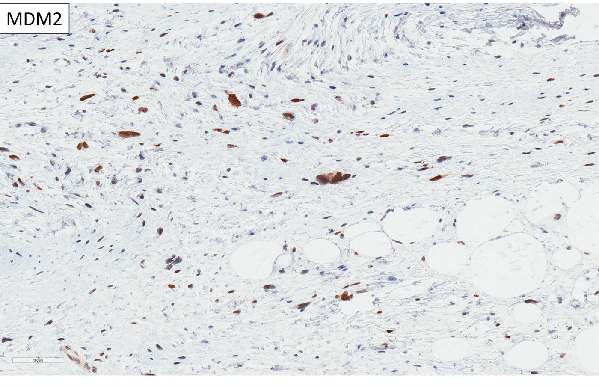
Case 4: MDM2 positive = liposarcoma. From the deck.Built from the “Soft Tissue Tumours: Diagnosis & Management” deck and its three recordings. The module has no knowledge-check questions; the four cases stand in for them. Patient photographs (including the two public figures used to illustrate bone vs soft tissue sarcoma), intra-operative photos and the decorative slides are left out. Notes: the deck lists neuroblastoma among paediatric sarcomas and the recording calls mesothelioma “a type of sarcoma”; neither is usually classed as a soft tissue sarcoma (neuroblastoma is an embryonal tumour of the sympathetic nervous system, and mesothelioma is a tumour of the pleura and peritoneum). The recording says adjuvant chemotherapy is not standard after surgery “but it is appropriate before surgery”; that applies to the chemo-sensitive types (osteosarcoma, Ewing sarcoma, rhabdomyosarcoma).